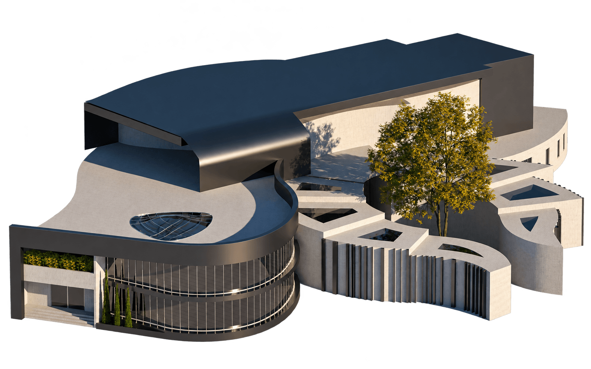
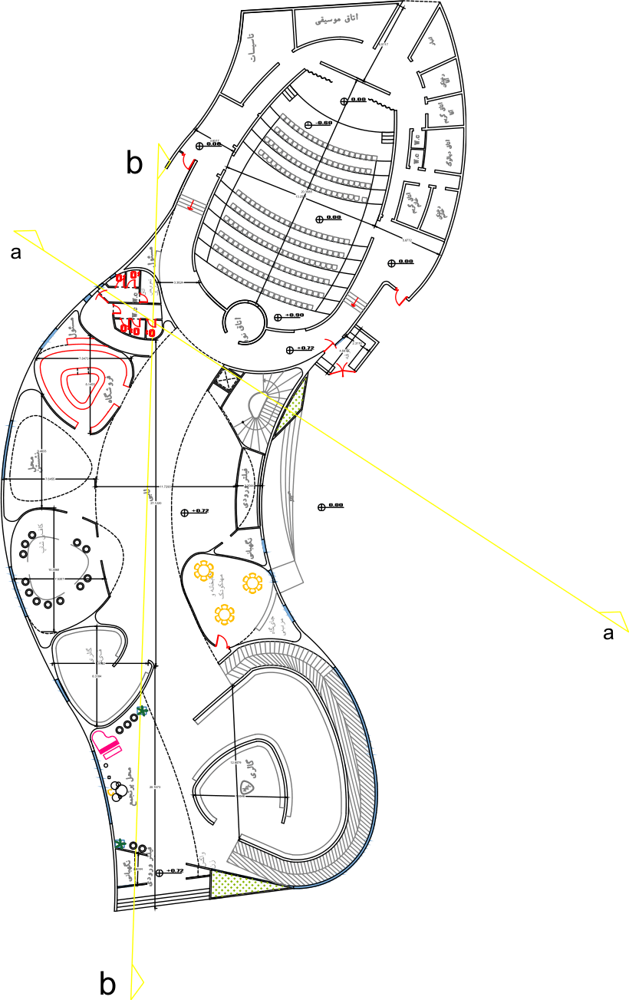
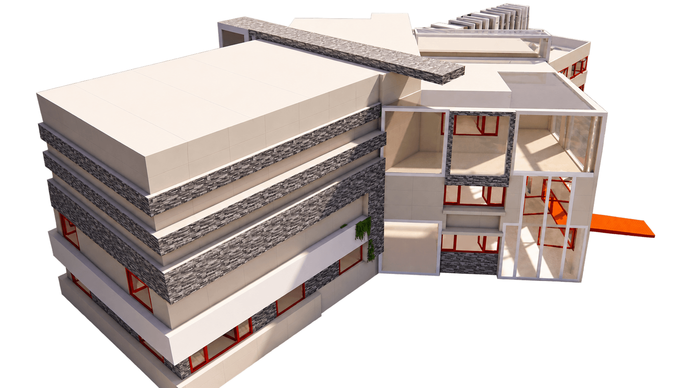
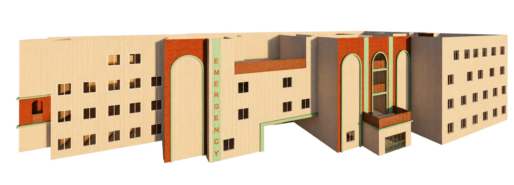
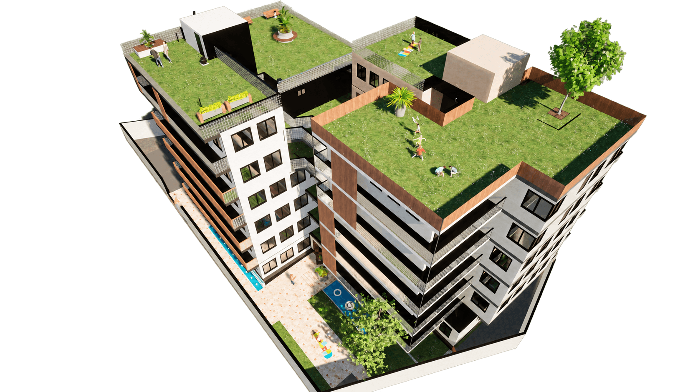

Spaces for
the in-between.
An exploration of light, belonging,
and the quiet poetry of everyday spaces.


Four projects.
Four ways of seeing.
From gathering to learning.
From care to everyday life.
Each project, a different conversation.
Cultural centre

Secondary school

Cardiac hospital

Collective living
The art of
gathering.
A place for women to come together. An exploration of sheltered courtyards, organic forms and the gentle boundary between inside and out.
A softer kind
of boundary.
Conceived for women’s evening gatherings in Ardabil, the centre balances openness with a sense of enclosure. Curved forms gather workshops, social spaces and quiet corners around a protected heart.
The cold climate informs the orientation, sheltered outdoor spaces and material choices. Sunlight, warm lighting and adaptable rooms support different ways of coming together.
Drawn around
a shared centre.
The plans move from a sheltered ground level to workshops and more intimate upper-floor rooms. Each drawing is a different reading of the same organic geometry.
A welcoming edge.
The curved glass facade and repeated screens bring a soft rhythm to the entrance.
The space between
A tree, a place to sit, a moment of stillness. The courtyard brings the scale of the building back to the person.
Room for making
Daylight enters from above, giving the workshop a clear and generous atmosphere.
A shared space.
A sense of belonging.
Room
to grow.
A school as a small landscape of encounters. Learning spaces branch out from shared circulation, leaving room for movement, daylight and discovery.
Learning begins
between lessons.
The project develops through two formal alternatives. The selected scheme arranges distinct wings around shared circulation, bringing classrooms and collective spaces into an open relationship.
Watercolour-style studies sit alongside the final renders. Together, they describe a process of testing mass, approach and the atmosphere of outdoor spaces.
A plan that
opens outward.
Angled wings make different learning spaces legible. The drawing set follows the school from site and ground level to upper floors and sections.
A clear point of arrival.
The orange entrance stair gives the white building a warm, visible threshold.
A school in the landscape
The separate wings form a building with several edges, approaches and outlooks.
A breath of open air
A quieter study of the terrace, where circulation meets daylight and planting.
Space to learn.
Freedom to discover.
Architecture
of care.
An investigation of clinical space at a human scale. Clear planning, recognisable entrances and light-filled interiors frame the journey from arrival to care.
A considered
first impression.
The cardiac hospital is organised as a series of connected clinical floors. Tall arched recesses and terracotta surfaces give the public facade a recognisable identity.
The study moves between the scale of the whole hospital and the smaller experience of a reception area or patient room. Plans, sections and interior renders allow those scales to be read together.
Care, considered
at every level.
The floor plans record rooms, circulation and supporting spaces. The sections connect that organisation vertically, from the lower level to the upper clinical floors.
An entrance with presence.
A dusk study brings the hospital’s entrances and tall facade elements into focus.
The first interior
A reception space studies clarity, natural light and the experience of waiting.
A more personal scale
The patient-room study brings attention to light, privacy and the space around a bed.
A quieter space.
A more human scale.
Living,
together.
Twenty-four homes, many ways of living. A residential study of privacy and connection, where courtyards and roof gardens extend life beyond the individual apartment.
More than
four walls.
The housing study brings different unit types into one complex, with the aim of accommodating a range of households. Ramps, shared spaces and planted courtyards are part of the original design brief.
Upper-floor units explore flexible living arrangements, while rooftop gardens offer shared space in the open air. The project studies how collective life and personal privacy can sit alongside one another.
Different lives.
One shared address.
A range of apartment layouts continues across the residential levels. Upper floors test more open arrangements and a closer relationship with the terraces.
An address on the street.
Timber-toned surfaces, balconies and planted terraces give the facade depth.
Life at ground level
Planting and water bring a more intimate scale to the spaces between the residential wings.
The plan, inhabited
Furniture and everyday objects make the relationship between individual rooms easier to read.
A little privacy.
A little more possibility.
Spaces begin
with people.
Zahra Bagheri
Architecture & spatial studies
This collection brings together academic work from the University of Mohaghegh Ardabili: four studies in how architecture can make room for learning, care, community and everyday life.
From the line of a plan to the atmosphere of a rendered room, the work follows a simple curiosity: how might a space feel to the people within it?
Take a closer look. Download the image collection